引言
[1]托马斯·瓦吉什首次在一本关于维多利亚时期文学的文艺评论著作中引进这个定义。详见：托马斯·瓦吉什：《维多利亚时期小说的美学》（弗吉尼亚州夏洛茨维尔：弗吉尼亚大学出版社，1985），P7。
[2]《韦伯斯特国际英语词典》（第三版，完整版）。
[3]尼尔·福赛斯：神奇的环环相扣：狄更斯和巧合，《现代语言学》，第83卷，第二册，1985年11月，PP151-165。
第一章
[4]罗伯特·菲亚拉是普瑞特艺术学院媒体艺术的教授，优秀的艺术家，我的一位要好的大学朋友，不幸于2009年去世。
[5]当时在苏格兰“土豆之夜”指酒吧免费提供餐食（通常只有炸土豆）以躲避午夜停止营业的规定。餐馆允许午夜后继续营业。
[6]《道德经》老子著，第73章，威廉·斯科特·威尔逊译（波士顿：shambhala出版社，2010），P39。
[7]沃尔特·惠特曼：《民主远景》，弗尔瑟姆编，爱荷华大学出版社：爱荷华州埃姆斯，2010，PP67-68。
第二章
[8]查尔斯·狄更斯：《荒凉山庄》，伦敦：华兹华斯经典出版社，1993，P189。
[9]亚历山大·伍尔科特：《罗马在燃烧》，纽约：维京出版社，1934，PP21-23。
[10]在阅读伍尔科特的故事讲述时，有一瞬间我甚至觉得可能是查尔斯·阿尔伯特·科里斯搞的恶作剧，是他趁着安妮转头看巴黎圣母院的时候迅速在扉页上写的字。伍尔科特说：“安妮在四处张望时有一刻是安静的，然后查尔斯·阿尔伯特·科里斯突然声音紧张地打破了沉默，毕竟他知道安妮孩提时代就知道了这本书。”
[11]C.G.荣格，《同步性：非因果关系原则》，普林斯顿，新泽西：普林斯顿大学出版社，1960，P22。
[12]同上，P28。
[13]这里有些夸大。确定是一个小时吗？又或者只是一刻钟？我调查发现几乎所有的巧合故事都存在这种典型的现象。
[14]卡米耶·弗拉马里翁：《天启》，纽约：哈珀&罗出版社，1900，P194。
[15]同上，P194。
[16]这是当时最权威的书。19世纪末期这本书因其细节描述非常有名，到处可以买到。
[17]卡米耶·弗拉马里翁：《大气：大众气象学》，巴黎：阿歇特出版社，1888，P510。
[18]同上，《天启》，P192。
[19]沃德·希尔·拉蒙：《亚伯拉罕·林肯回忆录1864-1865》（坎布里奇，马萨诸塞：大学出版社，1911），P116-120。
[20]我的女儿小时候睡觉会梦游，因此我知道夜晚看到一个梦游者是多么恐怖的事情。
[21]吉迪恩·威尔斯和埃德加·撒迪厄斯·威尔斯，《吉迪恩·威尔斯日志》，第二卷，波士顿：霍顿米夫林出版社，1911，P283。
[22]弗雷德里克·W·苏华德：《林肯的最后时光回忆录》，莱斯利周报，1909，P10。
[23]这个概率的计算很复杂。普杜大学的斯蒂芬·塞缪尔斯和乔治·麦凯布曾计算过同一个人两次中彩票的可能性。他们声称，在美国7年内同一个人两次彩票中奖的可能性超过50%。4个月内中奖两次的概率是1:30。我做此注释是因为我没有见过实际的计算过程。具体计算请参考佩尔西·戴康尼斯和弗雷德里克·莫斯特勒的论文《巧合研究方法》。
第三章
[24]亚瑟·库斯勒：《产婆蟾蜍案例分析》，纽约：Vintage出版社，1971，P13。
[25]引用译本请见：马丁·普利默和布莱恩·金，《巧合之上：巧合故事及其背后的秘密》，纽约：圣马丁，2006，P52-53。
[26]保罗·卡墨勒：《连续性法则》（柏林：Deutsche Verlag-Anstalt出版社，1919），P93。
[27]保罗·卡墨勒：《连续性法则》（柏林：Deutsche Verlag-Anstalt出版社，1919），P93。
[28]同上，荣格，P105。
[29]C.A.麦耶编著，大卫·罗斯科译，《原子和原型：保利/荣格的通信》，PP193-1958，普林斯顿，新泽西：普林斯顿大学出版社，2001，xxxviii。
[30]同上，C.G.荣格，《共时性》，P14。
[31]卡德C.R.1991a和1991b，“C.G.荣格和沃尔夫冈·保利的原型观”，《心理视角》24卷（春季—夏季）：第19-33页，25卷（秋季—冬季）：PP52-69。
[32]大卫·皮特：《共时性：事情和心智的桥梁》，纽约：Bantam出版社，1987，P17-18。
[33]杰夫A（1965）：《记忆，梦和反思》。纽约：Vintage Books出版社。
[34]约瑟夫·坎伯瑞：《共时性：互通的自然界和心灵》，大学城，德克萨斯：德克萨斯A&M大学出版社，2009，P12。
第四章
[35]卡尔G.荣格：《荣格论共时性和超自然现象》，伦敦：Routledge出版社，P8。
[36]我选用这个号码是因为它可能是我的家乡佛蒙特州的彩票中奖号码。
第五章
[37]这本书约100年以后才出版。见奥雷·奥斯丁：《卡尔达诺：赌博达人》，普林斯顿，新泽西：普林斯顿大学出版社，1953（或纽约：多佛，1965）。需要指出的是奥雷在这本书中首次提出卡尔达诺在数学概率论上的贡献。请见欧内斯特·纳格尔刊登在《科学美国人》上的《卡尔达诺：赌博达人》书评，1953年6月。
[38]用文字表述为：观察到的概率k/N和数学概率p之差小于所选的小数字ε，随着N增大，概率P接近于1。
[39]伽利略G.（约1620年）：《骰子的发现》。E.H.索恩译，摘录于F.N.大卫：《游戏、神灵和赌博：概率和统计学思想综述：从最初到牛顿时期》，纽约：Hafner出版社，1962年，PP192-195。
[40]约瑟夫·马祖尔：《几分运气？赌徒错觉的历史、数学和心理》（普林斯顿，新泽西：普林斯顿大学出版社，2010），P27。
[41]首次出版于1663年。
[42]原始信件见：《费尔马著作集》，塔内里和亨利编，第二卷，巴黎，1894年，PP288-314。信件译文请见：大卫尤金史密斯，《数学源语》，纽约：多佛，1959，P424。
[43]帕斯卡尔清楚，计算非双6的概率更容易，即35/36。他也肯定清楚两个独立事件共同发生的概率等于单个事件两两概率之积，因此抛n次中非双6的概率为（35/36）n。他计算得出（35/36）24=0.509，（35/36）25=0.494，从而得出结论，抛24次骰子中双6的概率稍小于50%，抛25次中双6的概率稍大于50%。
[44]1-（35/36）24＜1/2，但1-（35/36）25＞1/2。
[45]这是因为第一个骰子抛出任何一点的概率为1，这毫无疑问。如果第一骰子点数为2，其他4个骰子也必须点数为2。这个概率为
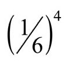
，或1296次中有一次概率。[46]详见https://www.youtube.com/watch？v=EDauz38xV9w的Numberfile video（数字文件录像）。
[47]斯蒂芬M.施蒂格勒：《统计学历史：1900年前不确定性的测量》。坎布里奇，马萨诸塞州：哈佛大学出版社，1986，P64-65。
[48]自1713年出版后，伯努利定理经历了一系列的完善。
[49]作为证据，请见沃伦·韦佛：《幸运女神：概率论》，花园城市，纽约：道尔布迪出版社，1963年，PP232-233。
[50]雅各布·伯努利，《猜度术》，伊迪丝·达德利·西拉译，巴尔的摩：约翰斯·霍普金斯，2006，P339。
[51]斯蒂芬M.施蒂格勒：《统计学历史：1900年前不确定性的测量》，坎布里奇译，马萨诸塞州：哈佛大学出版社，1986，P77。
[52]同上，伯努利，P329。
[53]约翰·阿尔伯特·惠勒：“我的回忆录”《国家科学院》第51卷，1980，第110页。引语原文为“上帝不玩骰子”，出现在爱因斯坦写给马克思·玻恩的信中。详见A.爱因斯坦：《阿尔伯特·爱因斯坦和马克思·玻恩书信集，1916-1955》，慕尼黑：Mymphenburg出版社（1969年），PP129-130。
[54]罗伯特·奥特：《万有理论》，纽约：Pi出版社，2006年，P84。
[55]同上，马祖尔，P129-130。
[56]同上，伯努利，P101。
[57]关于概率论还有另一篇重要的著作。1708年法国数学家皮耶·黑蒙·德蒙马特出版了论文《机会游戏分析》。
[58]卡尔达诺的《论机会游戏》写于16世纪，于1663年出版，而惠更斯的《机会游戏论证》出版于1657年。但是中世纪有一首诗歌《数字棋》（De Vetula，据说作者为理查德·富尔尼瓦），诗中简单描述了抛骰子（3个骰子）中有哪些组合，而这种方法没有提到任何期望值。
[59]该引用出现在伊迪丝·达德利·西拉的伯努利《猜度术》译本第132页。惠更斯的《机会游戏论证》作为《猜度术》第一部分再版。它的确于1657年作为附录出现在法兰斯·斯霍滕的数学练习册上。惠更斯的《机会游戏论证》不会与卡尔达诺的《论机会游戏》相混淆，后者只是一本赌博数学指南。
第六章
[60]3%的数据丢失。
[61]维克托·格雷奇、查尔斯·萨沃纳·文图拉和P.瓦萨罗-阿西乌斯：欧洲和北美出生婴儿性别比例差异之谜，《英国医学杂志》，第324卷（7344）：2002年4月27日。
[62]该图来自沃尔夫拉姆数学软件（Wolfram Mathematica）赞助的交互演示网站。
[63]佩尔西·戴康尼斯，苏珊·霍尔姆斯和理查德·蒙哥马利：抛硬币中的动力偏差，《SIAM杂志》，49（2）（2000），PP211-235。
第七章
[64]弗雷德里克·莫斯特勒，斯蒂芬E.费恩伯格和大卫C.霍格林编：《弗雷德里克·莫斯特勒论文选集》（纽约：斯普林格出版社，2006年），P620。
[65]罗伯特·西吉尔和安德里亚·许：“面对健康危机，治愈概率抓不住什么？”《全盘考虑：美国公共广播电台节目》（风险和推理系列），2014年7月21日。
[66]公路英里数依据为美国交通部和联邦公路管理局，土地面积依据为美国农林局。
[67]在100次轮盘赌红色为赢的游戏中，你只可能赢47次而不是50次，这看上去有点奇怪，但这是因为p＜q，所以最高概率偏离了均值。
[68]同上，马祖尔，P104。
[69]但是为了将图放在一页上，横轴按比例缩小后如图7.2。
[70]据说早期关于这个三角的报道始于印度人Halaydha的著作，他曾写过关于《印度教圣典》的评论，发现该三角的对角总和等于后来所称作的斐波纳契数列。我没有看过补充证据证明在那么早的时期就出现过那种三角，不过可能真存在。如果真是这样，肯定没有考虑这个结构公式，或许只是列出了一些有用的行数。
[71]彼得鲁斯·阿皮亚努斯是德国人类学者、数学家和天文学家。见D.E.史密斯：《数学的历史》，纽约：多佛，1958年，P508。
[72]同上，马祖尔。
[73]首先，我们移动整个图使得其最高点为中心点O，图的面积不变，信息完整，只是图代表的是红色对黑色递增或递减的概率分布。再次修订图，我们水平方向将原图缩小到
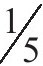
；同时水平方向将图增大5倍，放大曲线图。5倍来自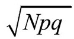
，其中N指轮盘次数，p指得红色概率，q指没有得到红色的概率。准确数值为4.99307。为方便起见约等于5。[74]首先必须严格移动曲线图，使均值为50。然后必须计算出标量，从而根据标量横向缩小，纵向增大曲线图。移动的关键要知道游戏轮数为100。
[75]标量为
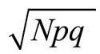
，其中N指轮盘次数，p指成功概率，q指失败的概率（q=1-p）。换句话说，本次红色为赢的游戏标量为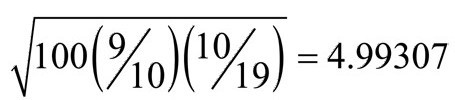
，或约等于5。[76]我们所做的缩小放大可简单地视为将变量x和y变成新的变量X和Y。首先X=x-a，表示将原来的图向右严格移动a个单位。X=x/b，表示将原图水平方向缩小
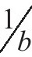
倍，然后Y=cy，表示将原图垂直方向放大c倍。最后我们得到一个关于X和Y的新的曲线图。对于p接近于q的二项式频率分布，我们通过公式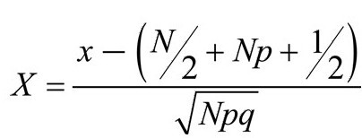
将x转换成X。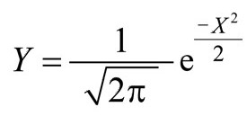
描绘的曲线图称为标准正态分布，与d eMoivre和Laplace所说的完全一致。结果来自正态分布公式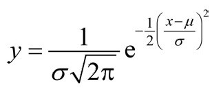
，当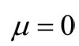
，（μ指均值，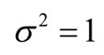
指标准方差）。[78]图的公式为
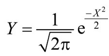
[79]卡尔·皮尔森：《进化中死的概率及其他》，伦敦：Edward Arnold出版社，1897，P45。
[80]我们在讨论摩纳哥的轮盘赌游戏。美国的轮盘赌和欧洲的不同，前者包括两个口袋，标为00和0。但是抛硬币游戏相似——00视为红色和黑色。
[81]同上，皮尔森，P55。
[82]同上，皮尔森，P62。
[83]同上，皮尔森，P55。
[84]沃伦韦弗：《幸运女神：概率论》，花园城市，纽约：Doubleday出版社，1963年，P282。
[85]约翰·斯卡尼：《斯卡尼博彩指南》，纽约：西蒙&舒斯特出版社，1961年，P24。
第八章
[86]E.H.麦金尼：“生日问题概述”，《美国数学月刊》，1996年，73：385-387。
[87]感谢布鲁斯·莱文提供的数据。转自：布鲁斯·莱文：“多项累积函数表示法”，《统计学年鉴》，9，（1981），P1123-1126。
[88]佩尔西·戴康尼斯给出了适合布鲁斯·莱文曲线图的近似值。函数为N≈47（k-1.5）3/2。
[89]理查德·冯·米塞斯：“Ueber Aufteilungs-und Besetzungs-Wahrscheinlichkeiten”，Rev.Fac.Sci.Univ.Istanbul，4，（1939），145-163。
[90]挑选N次后，两次抽到同一数字的概率P（N）是多少？答案是
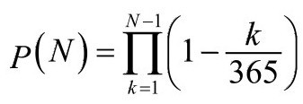
，首先求出两边的自然对数，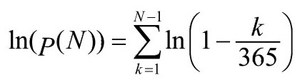
。由于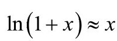
，得出右边每次约为-k/365，因此公式右边变成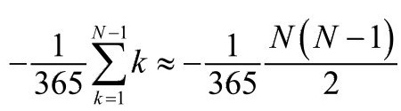
，即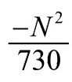
。因此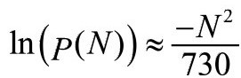
。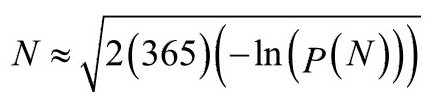
，P=1/2，所以N≈22.49。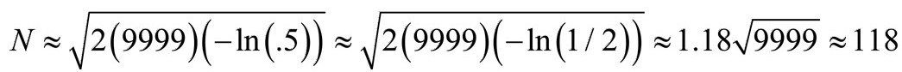
。[92]取等式
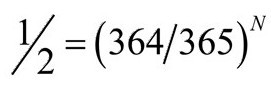
两边的自然对数后得出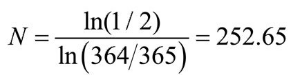
。[93]计算等式为
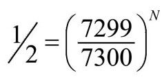
。取等式两边自然对数，得出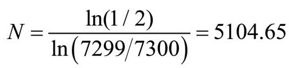
。[94]敲的各键之间相互独立，没有关联。但是根据键盘上的各键的位置，有些键比其他键的可能性更大。
[95]概率
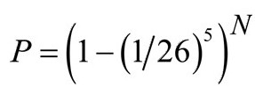
。[96]埃米尔·波雷尔：“Mécanique Statistique et Irréversibilité，”J.Phys.5e série, vol.3，1913，PP189-196。
[97]詹姆斯·琼斯将军：《神秘的宇宙》。纽约：麦克米伦，1930：4。
[98]达伦·维石特·亨利：《钢铁的狂想：打字机的零星史》，纽约：康奈尔大学出版社，2007，P192。
第九章
[99]同上，伍尔科特，P23。
[100]一般棋盘游戏骰子上的凹点是从骰子各面直接凿出来的。每个凹点深度一致，因此骰子6点的凿面会比1点的凿面轻。这种骰子带有欺骗性，因为骰子偏向点数更多的面。要制作公正公平的骰子，骰子各面凿出来的材质重量要相等。各点的漆料也要均匀一致。
[101]水平方向时颜色会均匀。垂直方向时由于压力差颜色会逐级渐变，因此垂直方向颜色均匀所花的时间更长。深度较浅的瓶子更容易获得均匀的颜色。
[102]见马克·卡克1964年9月发表在《科学美国人》上的文章《概率》。
[103]雅各布·伯努利：《猜度术》，伊迪丝·达德利·西拉译，巴尔的摩：约翰斯·霍普金斯出版社，2006年，P339。
[104]威廉·保罗·沃格特和罗伯特·伯克·约翰逊：《统计学方法词典：社会科学非技术性指南》，第四版，加利福尼亚千橡市：SAGE出版社，2011，P374。
[105]同上，P217。
[106]达雷尔·赫夫：《统计学会撒谎》，纽约：诺顿出版社，1993年，PP100-101。
[107]盖理·陶布斯：“我们真的了解健康之道？”《纽约时报》，2007年9月16日。
[108]J.H.班尼特（编）：《统计推断与分析：与R.A费希尔通信选集》（牛津：牛津大学出版社，1989）。
[109]保罗·D施托利：“天才的错误：R.A.费希尔和肺癌之争”，《美国传染病学杂志》，第133卷，1991年第5期。
[110]R.A.费希尔：《论文集》第1卷，J.H.班内特编（澳大利亚阿德莱德：澳大利亚南部阿德莱德大学：Coudrey Offset出版社，1974年），P557-561。
[111]罗纳德A.费希尔：（《自然》的“读者投书栏目”），“癌症与吸烟”，《自然》第182期，1958年8月30日。
[112]同上，施托利。
[113]罗纳德A.费希尔爵士：“香烟、癌症和统计学”，《百年回顾》，第2卷，P151-166页（1958年）。
[114]玛西亚·安吉尔和杰罗姆·卡西勒：“临床研究——公众应该相信什么？”《新英格兰医学杂志》第331期（1994），P189-90。
[115]盖理·陶布斯：“我们真的了解健康之道？”《纽约时报》，2007年9月16日。
[116]塞缪尔·阿贝斯曼：《事实的半衰期：为什么任何东西都有有效期？》，[纽约：科伦特（current）出版社，2012]，P7。
第十章
[117]同上，伍尔科特，P23。
[118]弗朗西斯科是继马尔科和安德里亚后意大利最受欢迎的名字，排名第三。曼努埃尔不在西班牙最常用人名的前100位中。
[119]事实上，玛利亚、劳拉、玛尔塔和保尔比曼努埃尔常用得多，所以乘以16是保守计算。
[120]从弗拉马里翁的故事描述中，我们不清楚这些校样是他正在写的书还是已经完成的书。
[121]同上，马祖尔，P177-178。
[122]见纳撒尼尔·里奇：“全世界最幸运的女人”，《哈珀杂志》，2011年8月。里奇这一数据来源于将近100万次计算。正确的赔率是2×1030：1。
第十一章
[123]沃伦·戈德斯坦：《保护人文精神：犹太律法关于道德社会的愿景》，以色列耶路撒冷：菲尔德埃姆出版社，2006，P269.
[124]迈克尔R.布朗维奇，调查组组长，HPD取证室独立调查报告，2006年5月11日至2014年8月22日内容见网址：http://www.hpdlabinvestigation.org.
[125]托拜厄斯·琼斯：“意大利凶杀案之谜”，《卫报》，2015年1月8日。
[126]威廉C.汤普森、弗朗哥·塔罗尼、科林·G.G.艾特肯：“误判概率如何影响DNA证据价值”，《司法科学杂志》，第48卷，第1期，2003年1月，P47-54。
[127]同上。威廉C.汤普森、弗朗哥·塔罗尼、科林·G.G.艾特肯，P47。
[128]美国国家科学院报告：“加强美国法庭科学：未来之路”（2009）。
[129]斯宾塞S.许：“法官宣布桑塔·特里布尔在1978年谋杀案中无罪，驳回DNA毛发证据”，《华盛顿邮报》，2012年12月14日。
[130]美国国家科学院报告，P160。
[131]同上，赖默尔。
[132]《昭雪计划》关于桑塔·特里布尔的报道见http://www.innocenceproject.org/cases-false-imprisonment/santae-tribble。
[133]同上。加勒特，P86。
[134]美国国家科学院报告，P86。
[135]同上。加勒特，P101。
[136]分别来自母亲和父亲的染色体含有同一基因的不同变体，基因组的大小通常被认为是一组染色体碱基的数量。
[137]引自伊利诺伊州库克县的美国州检察官安妮塔·阿尔瓦雷斯。她与该案件没有任何关系。
[138]特丽莎·梅里：《我是中央公园的慢跑者：关于希望和可能性的故事》，纽约：斯克里布纳，2004，P108。
[139]同上，梅里，P6-7。
[140]杰德S.拉克夫：“为什么无罪的人认罪”，《纽约书评》，2014.11.20/14卷，NO.18，PP16-18。
[141]来自美国国家研究委员会的2014年报告。
[142]希瑟·韦斯特，威廉·萨博和萨拉·格林曼：“2009年囚犯”，2011年10月27日更新。美国司法部，美国司法统计局，2009；劳伦·E.格莱兹和艾琳·J.赫伯曼，美国司法统计局：美国人口修正，2012和表1.1（2013），详见http://www.bjs.gov/content/pub/pdf/cpus12.pdf；托德D.明顿，美国司法统计局，2012年中监狱人数——统计表1（2013），参见http://1.usa.gov/1JdzSHH.
[143]2010年整个联邦和州刑事司法体系共开支260533129000美元，其中包括审判诉讼费（561亿美元）、治安维护奥利弗费（1242亿美元）、修正费（802.4亿美元）。
[144]奥利弗·罗德尔，劳伦-布鲁克·艾森和茱莉娅·鲍林：“什么使犯罪率下降？”纽约大学法学院布瑞楠司法中心，研究报告，2015。
[145]NAACP法律辩护和教育基金：司法刑事项目季度报告。截至2014年1月1日，美国监狱死刑犯总人数为3070人。其中被告种族如下：白人1323人，黑人1284人，拉丁美洲人388人，美洲原住民30人，亚洲人44人。
[146]NAACP法律辩护基金：“美国死刑犯”（2014年1月1日）。
[147]梅曼，R.J.和史蒂曼，R.J.（1992）：《美国宪法：简介和案例分析》，圣路易斯，MO：麦格劳希尔出版社，1992，P35。
[148]卡斯R桑斯坦：“改进的父亲”，《纽约书评》，2014年6月5日，14卷，NO.10，P8。
[149]引自美国司法统计局：“1968-2012年的死刑”。NAACP法律辩护和教育基金，2013和2014年“美国死刑犯”。
[150]同上，桑斯坦，P10。
[151]项目报告：“再议嫌疑犯辨认队列：目击者为什么会犯错，如何降低误认可能性”。《昭雪计划报告》，（2009），P17。
[152]布兰登L.加勒特：《无辜定罪：刑事诉讼哪里出错了？》，马萨诸塞州剑桥：哈佛大学出版社，2011，P5。
[153]同上，昭雪计划，P5。
[154]密歇根大学法学院全国平反登记处和西北大学法学院冤假错案中心。详见http://www.law.umich.edu/special/exoneration/Pages/browse.aspx。
[155]据说查尔斯·海因斯就是这样做的。他是布鲁克林地方检察官，被指控在贾巴尔·柯林斯的免罪听证会上犯有这些错误。贾巴尔被迫承认谋杀罪，已坐牢16年。纽约市为此赔偿受害者1000万美元。见斯蒂芬妮·克利福德：“纽约市因误判赔偿受害者1000万美元”，《纽约时报》，2014年8月19日。
[156]沃伦·戈德斯坦：《捍卫人权：道德社会犹太律法前景》，以色列耶路撒冷：菲尔德海姆出版社，2006，P269。
第十二章
[157]巴斯德·瓦勒里-拉多编：《巴斯德作品集》第7卷，法国巴黎：马森出版社，1939，P131。
[158]杰勒德·尼尔伦伯格：《创造性思维的艺术》，纽约：西蒙&舒斯特出版社，1986，P201。
[159]布鲁斯W.林肯：《午夜阳光：圣彼得堡和现代俄罗斯的兴起》，哥伦比亚博尔德尔：基础出版社，2002，PP150-151。
[160]维克托E.普林和W.J.威尔特希尔：《X光：过去和现在》，伦敦：E.本出版社，1927。
[161]伦琴认为X射线是看不见的。实际上，X射线能发出蓝灰色光。见K.D.斯泰德利：“辐射光”，《视觉研究》，第30卷，1990，P1139-1143。
[162]W.R.尼特克：《X射线发现者威廉·康拉德·伦琴的一生》，图森：亚利桑那大学出版社，1971。
[163]芭芭拉·戈德史密斯：《痴迷的天才：居里夫人的精神世界》，纽约：诺顿出版社，2005，P64。
[164]漫画“笑一笑”，《生活》，1896年2月。
[165]劳伦斯K.罗素：诗歌“生命”，P27：1896年3月12日。
[166]同上，戈德史密斯，P65。
[167]霍华德H.赛利格：“威廉·康拉德·伦琴和光”，《今日物理》，1995年11月，P25-31。
[168]“X射线的50年”，《自然》，156，P531（1945年11月3日）。
[169]H.J.W.丹：“摄影的新发现”，《麦克卢尔杂志》，第6卷第5期，1896年4月。麦克卢尔在1929年金融危机中破产。幸运的是，“古腾堡项目”将《麦克卢尔》所有文章都以电子书存档。
[170]J.麦肯齐·戴维森：“新型摄影术”，《柳叶刀》74，第九卷：795，875，（1896年3月21日）。
[171]《自然》，53：274（1896年1月23日）。
[172]奥托·格拉瑟：《威廉·康拉德·伦琴及其早期射线研究》，旧金山：诺曼出版社，1993，P47-51.
[173]电影“原子物理学”，J.亚瑟·兰克公司出品，1948年。
[174]源自法国杜埃市里尔大学科学学院院长路易·巴斯德教授的就任演讲，1854年12月7日。详见：休斯顿·彼得森主编的《世界精彩演讲集锦》，纽约：西蒙&舒斯特出版社，1954，P473。
[175]艾萨克·牛顿、H.W.特恩布尔主编：《艾萨克·牛顿信件集》第1卷，1661-1675，剑桥：剑桥大学出版社，1959，P416。
[176]（索尔兹伯里的）约翰：《元逻辑》，丹尼尔·麦加里译，巴尔的摩：保罗德里出版社，2009，第167页。
[177]史蒂文·温伯格：《湖边景观：世界与宇宙》，剑桥，马萨诸塞州：哈佛大学出版社，2009，P187。
第十三章
[178]B.F.斯金纳认为这促使科维尔继续冒险。
[179]詹姆斯B.斯图尔特：“征兆”，《纽约客》，2008年10月20日，P58。
[180]同上，P63。
[181]纳尔逊D.施瓦兹：“‘极简’证券交易人的连环损失”，《纽约时报》（2008年1月25日）。
[182]尼克·李森：《流氓交易商》，纽约：时代华纳出版社，1997。
[183]罗素·贝克：“关键的选择”，《纽约书评》，2008年11月6日，P4。
[184]赛斯·斯坦和迈克尔·维瑟逊：《地震学、地震和地球结构概述》，新泽西霍博肯：威利·布莱克威尔出版社，2002，P5-6。
[185]弗罗林·迪亚库：《巨大的灾难：未来灾难预测研究》，新泽西普林斯顿：普林斯顿大学出版社，2010，P29.
第十四章
[186]迈克尔·谢尔默：《人们为什么相信怪异之事？》，纽约：亨利·霍特出版社，1997，P69。
[187]伊丽莎白·吉尔特，《万物的签名》，纽约：维京出版社，2013，P483。
[188]事实上，发现飞蛙并将它带给华莱士的是一个中国劳工。
[189]路易斯A.科德：《大众心理学百科全书》，韦斯特波特：格林伍德出版社，2005，P182。
[190]D.J.伯恩和C.霍诺顿：“世间存在超能力吗？证据再现：信息传递的异常过程”，《心理学刊》115（1994）：P4-8。
[191]卢尔德·加西亚·纳瓦洛，“阴间来信：一个关于爱情、谋杀和巴西法律的故事”，全国公共广播电台新闻（周末版），2014年8月9日。
[192]马丁·加德纳：《以科学之名的狂热和谬论》，纽约：多佛，1957，PP299-307。
[193]斯坦顿·亚瑟·科布伦茨：《另外的世界：通灵奇境》，温哥华：康沃尔出版社，1981：P109-110。
[194]威尔金斯、休伯特和哈罗德·谢尔曼：《跨越空间：心灵历险记》，纽约：汉普顿罗兹出版社，2004，P26-7。
[195]埃里克·洛德：《科学、心智和奇异体验》，美国北卡罗来纳州罗利：卢卢出版社，2009，PP210-211。
[196]同上，加德纳，P351。
[197]J.B.莱茵和L.E.莱茵：“马的‘读心术’调查”，《异常与社会心理学》，第23卷（4）（1929）：P449。
[198]布罗德C.D：“超心理学和哲学的相关性”，《哲学》24：91（1949）：PP291-309。
[199]约瑟夫·班克斯·莱茵：《心灵世界》，伦敦：费伯出版社，1953，P80。
[200]最初源自罗纳德·埃尔默·费希尔的《实验设计》，伦敦：奥利弗&博伊德出版社，1937年。也可见罗纳德·埃尔默·费希尔的《统计方法、实验设计和科学推理》，牛津：牛津大学出版社，1990，P11-18。
[201]费希尔的文章的确论述的是实验设计和主观错误问题，但这里主要为了明确数学和实验之间的关系。
[202]同上，费希尔，P12。
[203]乔治R.普赖斯：“科学和超能力”，《科学》（新版），第122卷，NO.3165（1955年8月26日）：P359-367。
[204]H.霍迪尼：《神灵巫师》，纽约：哈珀出版社，1924年，P138。
[205]《传道书1》：PP5-7。
[206]约翰·弥尔顿：《移动的弥尔顿》，道格拉斯·布什编，纽约：维京出版社，1961，PP416-7。
[207]罗尔德·达尔：《查理和巧克力工厂》，纽约：班塔姆出版社，1973，P137。
第十五章
[208]弗拉基米尔·纳巴科夫：《黑暗中的笑声》，纽约：新方向出版社，2006。
[209]尤金·尤涅斯库：《秃头歌女和其他戏剧》，纽约：格罗夫出版社，1958，P18。
[210]希拉里P.丹嫩贝格：《巧合和反事实：小说中的时空情节设计》，内布拉斯加州林肯：内布拉斯加大学出版社，2008，P90。
[211]译自《高文爵士和绿衣骑士》（佚名）第二节最后一句。布莱恩·斯托内（译），纽约：企鹅出版社，1974，P22。
[212]佚名，杰西·韦斯顿（译）：《高文爵士和绿衣骑士：亚瑟王时期的浪漫故事》，伦敦：大卫·纳特，详见http://d.lib.rochester.edu/camelot/text/weston-sir-gawain-and-the-green-knight.
[213]同上，佚名。
[214]同上，佚名。
[215]佚名，威廉·雷蒙德·约翰逊：《高文爵士和绿衣骑士》，英国曼彻斯特：曼彻斯特大学出版社，2004，P25。
[216]理查德·波义尔：“锡兰国的三王子”，《星期日泰晤士报》，2000年7月30日和8月6日。
[217]多夫·诺伊、丹·本-阿莫斯、艾伦·弗兰克尔：《犹太人的民间故事》之第1卷《西班牙裔犹太人的民间故事》，宾夕法尼亚州费城：犹太出版社，2006，PP318-19。
[218]信件是写给美国教育改革家霍勒斯·曼的，是英国男爵、特使沃波尔而不是霍勒斯·曼将信送到佛罗伦萨的宫廷的。
[219]罗伯特K默顿、艾莲诺·巴伯：《走运：科学社会学和社会语义学研究》，新泽西普林斯顿：普林斯顿出版社，2003，P3-4。
[220]同上，波义尔。
[221]佚名：《锡兰国三王子历险记》，伦敦，切特伍德出版社，1722。
[222]这个故事的其他版本见伊德里斯·沙赫主编的《世界民间传说：巧合故事集锦》（伦敦：八边形出版社，1991）和霍华德·金斯科特和潘迪特·纳特沙·萨斯特里主编的《太阳和南印度民间传说》（蒙大纳州怀特菲时：凯辛格出版社，2010，P140）。
[223]福蒂斯·詹尼蒂斯、约翰·皮尔和乔斯·安杰尔·加西亚主编：《理论化叙事》，柏林：沃尔特·德·格鲁伊特出版社，2007，P181。
[224]保罗·奥斯特：《月亮宫》，纽约：维京出版社，1989，P236-237。
后记
[225]大卫·汉德：《不可能性定律：为什么每天都发生巧合、奇迹和罕见事件？》，纽约：科学美国人/法勒·施特劳斯和吉鲁出版社，2014，P76。《巧合》和《不可能性定律》这两本书从不同的角度论述巧合，视角独特，互为补充。
[226]1980年，物理学家路易斯·阿尔瓦雷斯和他的儿子地质学家沃尔特·阿尔瓦雷斯发现岩石层中含有高浓度化学元素铱，这标志着白垩纪时期的结束。20世纪80年代至2013年学界争议不断的学说认为，有一颗巨大的行星撞向地球，给地球造成了很大的影响。2013年，达特茅斯地球科学系的穆库尔·沙玛和杰森·摩尔在第44届月球和行星会议上提交了论文，指出撞向地球的不是行星，而是彗星。